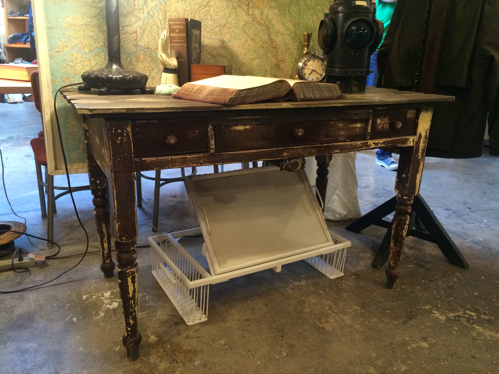
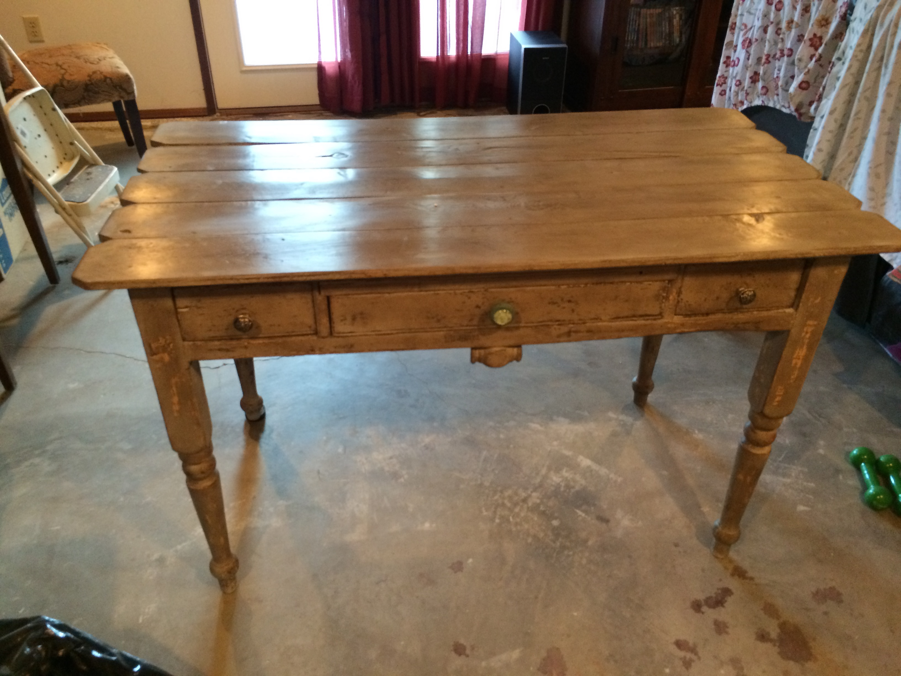
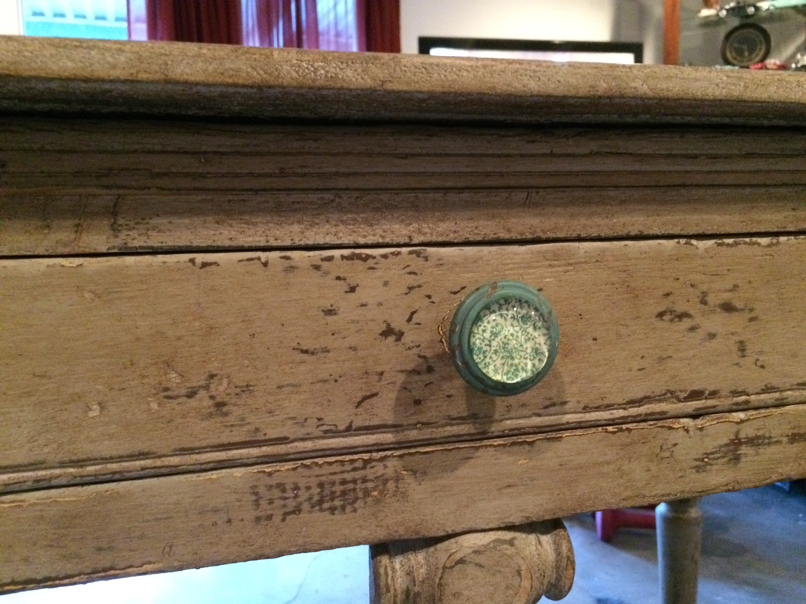

Posts
Sorry, guys. No posts just yet! I've been spending my time moving in, deep cleaning the house, and cleaning up the forest of weeds that took over the yard while the house was vacant. I have a chandelier makeover I want to share but don't want to post that until I can get a picture of it hung in the dining room, but I'm not going to hang it until I refinish the ceiling. My first project is taking down the current crown moulding in the living room and dining room and putting up a beadboard ceiling and new crown moulding!
In the meantime, here is the desk I refinished for my office! I used Annie Sloan chalk paint in Paris Grey and finished it with Annie Sloan dark wax. Then I distressed it and changed the knobs. I love how it turned out! I almost didn't refinish it but then after staring at it for a while, I decided it wasn't quite the look I wanted. Here is the before picture:
Here is after:

-
{{ post.title }}
{{ post.excerpt }}
Read More